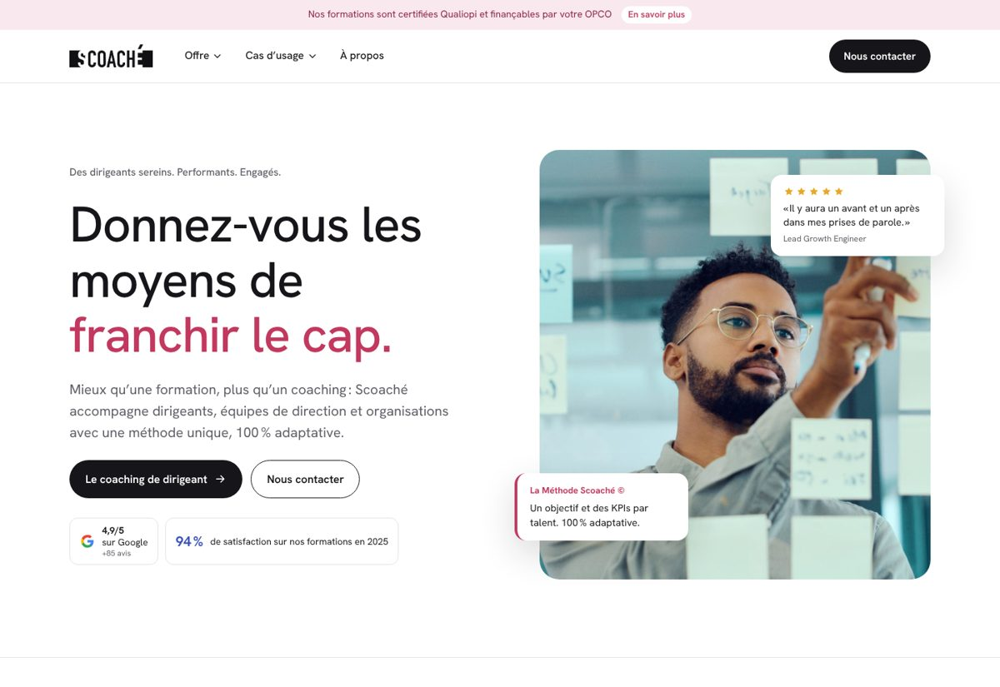

Proposition 1
Évolution
Inspirée de scoache.com · Familier · rassurant · continuité
On garde ce qui marche sur le site actuel — fond blanc, cartes à liseré de couleur, bouton noir, bandeau Qualiopi — et on modernise : plus d’air, typographie plus fine, photos plus grandes, et la nouvelle arborescence centrée sur le coaching de dirigeant.
- Blanc
#FFFFFF - Encre
#16161A - Framboise
#C2385F - Bleu
#3A52B8 - Grège
#F6F5F2
Typographie : Hanken Grotesk
Ouvrir la proposition →